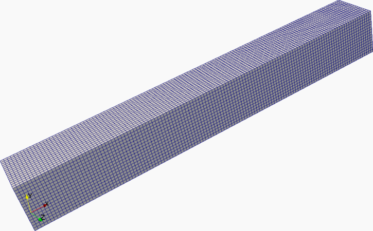
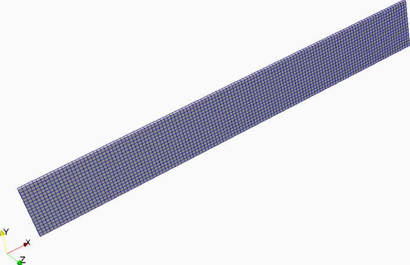
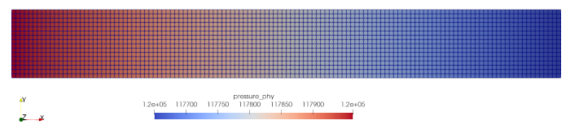

Warning
WORK IN PROGRESS
Navigate: ← Configuration | Overview | Tracking →
In this tutorial, you will learn how to use the complete toolchain of the APES
suite to deploy simulations. This includes the generation of the mesh with
Seeder, running the actual simulation with Musubi and finally
post-processing the results with mus_harvesting which generates files to be
visualized with standard tools like Gnuplot and Paraview. Therefore we use a
channel as an example. The test case can be found under
examples/tutorials/tutorial_cases/tutorial_channelGeneric.
This test case will be used in most of the following tutorials.
Some parts will be explained in more depths later.
Generate the folders
using:
mdkir mesh tracking restart harvest output
Make sure that Seeder is compiled and you know how to call it ( see here).
At first, we define the seeder.lua file containing general informations
/ global variables like sizes and the refinement levels of the mesh.
--! [Global variables]
-- Height of the channel [m]
height = 1.0
-- Length to height ratio
l_h = 8.0
-- Length of the channel [m]
length = l_h*height
-- Depth of the channel [m]
depth = length
-- General level of mesh refinement
level = 8
-- Special levels for local refinement. Set to 0 to make refinement optional.
-- If it should be used, activate useRefine in the 'Geometry definition'. The
-- refinmentLevels will be increased then.
refinementLevel = 0
refinementLevel2 = 0
--outputpreview = true
--! [Global variables]
In the next part we have some variables with boolian values. We use them to activate or deactivate some parts of the script which give us some flexiblity to easily modify the case. With this script we can have a look at the effect of qvalues, periodic boundaries and the use of different STL files.
--! [Geometry definition]
case2d = false -- Creates a 2D channel if set to true
usePeriodic = true -- Activates periodic boundaries
qValues = true -- Activates qvalues
useObstacle = false -- Activates obstacle in the channel
fixHeight = true -- Channel's height is fixed and is used to compute dx
useRefine = false -- Activate refinement, increase levels by 1 and 2.
smoothlevels = false -- False avoids refinement of single elements.
smoothbounds = false -- False avoids refinement of single elements.
--! [Geometry definition]
You might remember the fixHeight value from above. If it is set to true the
dx is computed by the specified height of the channel. Else dx is computed
defining the length of the channel first.
--! [dx computed by height]
if fixHeight then
-- Number of elements in the height
nHeight = 2^(level-4)
-- Element size [m]
dx = height/nHeight
-- Number of elements in bounding cube
-- = number of elements in channel + inlet + outlet
nLength = nHeight*l_h + 2
-- Level required to reach computed dx
level = math.ceil( math.log(nLength)/math.log(2))
-- Length of the bounding cube
length_bnd = (2^level)*dx
--! [dx computed by height]
--! [dx computed by length]
else
-- Length of the bounding cube
length_bnd = length/(1.0-2.0/2^level)
-- Element size [m]
dx = length_bnd/(2.0^level)
-- Number of elements in height
nHeight = 2.0*math.floor(length/(dx*2.0*l_h))
-- Height of the channel
height = nHeight*dx
end
--! [dx computed by length]
Here, we have some reference values that have effect on the geometry of the channel. You might change them and compare the effects later on in Paraview.
--! [Reference values]
-- A minimum level, by which all parts in the computational domain should at
-- least be resolved with. Default is 0. Here, set it to value calcualted above.
minlevel=level
-- A maximum level, which is reached on finest level of refinement.
maxLevel = level+math.max(refinementLevel, refinementLevel2)
-- Smallest element size (on finest level) [m]
dxMin = length_bnd/(2^maxLevel)
-- Half of element size on finest level [m]
dx_half = 0.5*dxMin
-- Smallest possible element size
dx_eps = length_bnd/2^20
The next section is about refinement at selected positions. The usage of refinements is explained in [chapter 09].
-- Increase refinement levels, if useRefine is active.
if useRefine then
refinementLevel = refinementLevel + 1
-- Refinement level 2 can only be one larger than 1, otherwise level jump is
-- too big.
refinementLevel2 = refinementLevel + 1
end
--! [Refinement box 1]
-- Size of refinement box 1 in x-direction
size_x = 0.75*length
-- Start of refinement box 1 (x) based on length
start_x = -0.425*length
-- Size of refinement box 1 in y-direction
size_y = 0.5*height
-- Start of refinement box 1 (y) based on height
start_y = -0.25*height
-- Size of refinement box 1 in y-direction
size_z = 0.5*height
-- Start of refinement box 1 (z) based on height
start_z = -0.25*height
--! [Refinement box 1]
--! [Refinement box 2]
-- Size of refinement box 2 in x-direction and start of it
start2_x = -0.375*length
size2_x = 0.5*size_x
-- Size of refinement box 2 in y-direction and start of it
size2_y = 0.5 * size_y
start2_y = -0.5* size2_y
-- Size of refinement box 2 in z-direction and start of it
size2_z = size2_y - dx_half
start2_z = start2_y + dx_half/2.0
--! [Refinement box 2]
--! [Reference values]
Next, we define the bounding cube. It is the box that includes the complete simulation domain. It must be large enough, otherwise it just truncates all geometries that go beyond this cube.
--! [Bounding cube]
-- Bounding_cube: two entries (origin and length in this order, if no keys used)
bounding_cube = {
origin = { -0.5*length_bnd, -0.5*length_bnd, -0.5*length_bnd },
length = length_bnd
}
--! [Bounding cube]
This part is followed by the spatial_object table. Here we define the seed
and some refinements. If useRefine = false the level of our refinement boxes
will be the same as the rest of our mesh and so no refinement will be added.
--! [Spatial objects]
spatial_object = {
{
attribute = {
kind = 'seed'
},
geometry = {
kind = 'canoND',
object = {
origin = { 0.0, 0.0, dx_half },
}
}
},
--! [Refinement box 1 & 2]
{
attribute = {
kind = 'refinement',
level = refinementLevel+level,
label ='box1'
},
geometry = {
kind = 'canoND',
object = {
origin = { start_x, start_y, start_z },
vec = {
{ size_x, 0.0, 0.0 },
{ 0.0, size_y, 0.0 },
{ 0.0, 0.0, size_z }
}
}
}
},
{
attribute = {
kind = 'refinement',
level = refinementLevel2+level,
label ='box2'
},
geometry = {
kind = 'canoND',
object = {
origin = { start2_x, start2_y, start2_z },
vec = {
{ size2_x, 0.0, 0.0 },
{ 0.0,size2_y, 0.0 },
{ 0.0, 0.0, size2_z }
}
}
}
},
--! [Refinement box 1 & 2]
Here we can define our boundaries the inlet and the outlet of the channel.
--! [Inlet and outlet boundary conditions]
{
attribute = {
kind = 'boundary',
label ='east' -- outlet
},
geometry = {
kind = 'canoND',
object = {
origin = { 0.5*length+dx_eps, -0.5*height-dx_eps, -0.5*depth-dx_eps },
vec = {
{ 0.0, height + 2*dx_eps, 0.0 },
{ 0.0, 0.0, depth + 2*dx_eps }
}
}
}
},
{
attribute = {
kind = 'boundary',
label ='west' -- inlet
},
geometry = {
kind = 'canoND',
object = {
origin = { -0.5*length-dx_eps, -0.5*height-dx_eps, -0.5*depth-dx_eps },
vec = {
{ 0.0, height + 2*dx_eps, 0.0 },
{ 0.0, 0.0, depth + 2*dx_eps }
}
}
}
},
--! [Inlet and outlet boundary conditions]
Here we can define our boundaries north and south of the channel.
--! [Walls]
{
attribute = {
kind = 'boundary',
label ='north'
},
geometry = {
kind = 'canoND',
object = {
origin = { -0.5*length-dx_eps, 0.5*height+dx_eps, -0.5*depth-dx_eps },
vec = {
{ length + 2*dx_eps, 0.0, 0.0 },
{ 0.0, 0.0, depth + 2*dx_eps }
}
}
}
},
{
attribute = {
kind = 'boundary',
label ='south'
},
geometry = {
kind = 'canoND',
object = {
origin = { -0.5*length-dx_eps, -0.5*height-dx_eps, -0.5*depth-dx_eps },
vec = {
{ length + 2*dx_eps, 0.0, 0.0 },
{ 0.0, 0.0, depth + 2*dx_eps }
}
}
}
},
--! [Walls]
}
--! [Spatial objects]
It is possible for the channel to make use of periodic boundaries.
Therefore you need to define two planes close to each other that are repeated
along the channel depth (usePeriodic=true) .
Note
Since we can't use if conditions inside a table we use
table.insert(spatial_object, ...) to append this part to the spatial_object
table.
--! [Use periodic boundaries]
-- If usePeriodic is active, periodic boundary conditions are used in depth,
-- which means in z-direction in this case. This is one way of creating a quasi-
-- 2D domain.
if usePeriodic == true then
depth = dx
table.insert(spatial_object,
{
attribute = {
kind = 'periodic',
label = 'periodic'
},
geometry = {
kind = 'periodic',
object = {
plane1 = { -- top plane
origin = {
-0.5*length - dx_eps,
-0.5*height - dx_eps,
depth + dx_half/4.0
},
vec = {
{ length + 2*dx_eps, 0.0, 0.0 },
{ 0.0, height + 2*dx_eps, 0.0}
}
},
plane2 = { -- bottom plane
origin = {
-0.5*length + dx_eps,
-0.5*height + dx_eps,
- dx_half/4.0
},
vec = {
{ 0.0, height + 2*dx_eps, 0.0 },
{ length + 2*dx_eps, 0.0, 0.0 }
}
},
}
}
}
)
--! [Use periodic boundaries]
Of course you do not have to use periodic boundaries. Instead you could use a
script that defines specific boundaries for top and bottom of the channel.
Here, we can make use of the aformentionded boolean to easily switch between two
cases: while we choose a depth of dx for a 2D case, for a 3D test case we use
a rectangular channel, where the depth is equal to the height.
--! [Non-periodic]
-- If usePeriodic is deactived, but case2d is selected, we use another wayt to
-- create a quasi-2D channel: a channel with 1 element in depth. If not, we
-- create a 3D channel.
else
if case2d then
depth = dx
else
depth = height
end
table.insert(spatial_object,
{
attribute = {
kind = 'boundary',
label = 'top'
},
geometry = {
kind = 'canoND',
object = {
origin = {
-0.5*length - dx_eps,
-0.5*height - dx_eps,
0.5*depth + dx_eps
},
vec = {
{ length + 2*dx_eps, 0.0, 0.0 },
{ 0.0, height + 2*dx_eps, 0.0}
}
} -- object
} -- geometry
} -- spatial object
)
table.insert(spatial_object,
{
attribute = {
kind = 'boundary',
label = 'bottom'
},
geometry = {
kind = 'canoND',
object = {
origin = {
-0.5*length - dx_eps,
-0.5*height - dx_eps,
-0.5*depth - dx_eps
},
vec = {
{ length + 2*dx_eps, 0.0, 0.0 },
{ 0.0, height + 2*dx_eps, 0.0}
}
},-- object
} -- geometry
} -- spatial object
)
end --periodic
--! [Non-periodic]
In order to simulate a flow around an obstacle you might activate
useObstacle=true. Here you can choose between two stl files for a sphere (2D)
or a cylinder (3D). You have to make sure that the files are located in the
defined directory. Now it makes sense to activate qvalues. This allows to
refine the mesh at i.e. circular boundaries. This is done with
calc_dist = true in the attribute table of a spatial object.
--! [Use of obstacles]
-- If obstacle is true, we distinguish between 2D (cylinder) and 3D (sphere)
-- case.
if useObstacle == true then
if case2d == true then
stlfile = 'stl/cylinder.stl'
stlLabel = 'cylinder'
else
if usePeriodic == true then
stlfile = 'stl/cylinder.stl'
stlLabel = 'cylinder'
else
stlfile = 'stl/sphere.stl'
stlLabel = 'sphere'
end
end
-- If we use an obstacle, we can make use of qValues. Here, we also
-- distinguish between 2D (cylinder) and 3D (sphere). If we don't want to use
-- them.
table.insert(spatial_object,
{
attribute = {
kind = 'boundary',
level = maxLevel,
label = stlLabel,
calc_dist = qValues,
},
geometry = {
kind = 'stl',
object = {
filename = stlfile,
}
},
transformation = {
-- Deformation factor to scale the obstacle. Here: 1 --> remains the same.
deformation = 1,
-- In this case, we do not have to move the geometry.
translation = { 0.0, 0.0, 0.0 }
}
}
)
end -- useObstacle
--! [Use of obstacles]
Now you can start Seeder. If it successfully finishes, the mesh was generated.
Harvester (integrated in Seeder) can process the mesh and generate a VTK
file, which can then be visualized by Paraview. Let's prepare the sdr_harvester.lua
for visualization. This is the simplest form of mesh visualization. For more
possibilities have a look at the
Seeder documentation.
The sdr_harvester.lua contains two parts. The first part defines the input:
-- Mesh to visualize, this is the common mesh definition, as found in
-- treelm/config.lua.
-- Either a predefined mesh, or the prefix for a mesh on disk.
mesh = 'mesh/'
-- If restart table and mesh are present then priority is given to restart
restart = {
-- read = 'debug/final100_restart_ProtoData_header_100.lua'
}
The second part defines the output
-- To dump complete mesh or restart file with out any tracking table
-- just default output table with basename, format as shown below
-- Configuration for the output to produce
output_folder = 'debug/' -- Prefix to use for the produced files,
-- if it ends in a '/', this is a directory,
-- which needs to exist!
output = {
format = 'vtk', -- Visualization file format, defaults to 'vtk'
-- Currently only vtk is supported here.
dataform = 'binary', -- Form to write data in:
-- - 'binary', or
-- - 'ascii'
-- Default is 'binary'
write_pvd = false -- write pvd file containing all timesteps
-- Default is true
}
Now run ~/apes/seeder/build/sdr_harvesting sdr_harvester.lua.
Visualize the mesh with Paraview.
If you set up usePeriodic = false in seeder.lua
the VTU file should look like this:

Otherwise you can build a two-dimensional channel like this:

The periodic version looks like the 2D channel.
Let's have a look at how to configure Musubi.
Note
Many things were mentioned in the last tutorial
In order to repeat the most important things, you can make use of a checklist. For the simulation you need to define:
mesh location of the directory is needed.identify = { layout = "..", kind = "..", relaxation = ".."}
There exist default values, which are explained in the
last tutorial.fluid table with information about physics and LBM units.initial_condition table with the initial pressure and velocity.boundary_condition table aims to tell Musubi how to handle the
boundaries that were set up in seeder.lua. It reads the boundaries' labels
and converts them into a wall, an inlet or an outlet.tracking table for information about the target output. It exist a
description module for tracking that you find
here.First we need to include seeder.lua to acess all geometric variables.
require "seeder" -- Tells musubi.lua to use defined variables from seeder.lua
simulation_name = simName
We define local variables that we need to turn off or on a few features:
-- Initialization of channel, for true --> values>0, false --> initalized with 0
initChannel = false
Next we define some variables:
--! [Variables]
-- Collision Model (bgk, trt, mrt)
relaxationModel = 'bgk'
-- Stencil (d1q3, d2q9, d3q6, d3q7, d3q19, d3q27)
if case2d then
stencil = 'd2q9' -- use 2D stencil
else
stencil = 'd3q19' --use 3D stencil
end
-- Physics (fluid, fluid_incompressible)
physicsModel = 'fluid_incompressible'
--! [Variables]
And the flow parameters used:
--! [Local variables]
-- Flow parameters
-- Density of the fluid [kg/m^3]
rho0_phy = 1.0
-- Reynolds number of the flow
Re = 60
-- speed of sound in air [m/s]
cs_phy = 343
Other flow parameters like Mach number and viscosity are defined below depending on scaling type which is used to compute time step. In acoustic scaling, dt is computed for fixed Ma number whereas in diffusive scaling, dt is computed for fixed viscosity and omega. Here are timestep calculation for acoustic and diffusive scaling.
------------------------ Compute physical timestep -----------------------------
-- Lattice speed of sound
cs_lat = math.sqrt(1.0/3.0)
if (scaling == 'acoustic') then
-- In acoustic scaling, Ma is fixed
-- Mach number
Ma = 0.05
-- Inflow velocity computed from Ma number [m/s]
vel_phy = Ma * cs_phy
-- Kinematic viscosity of the fluid calculated from Re [m^2/s]
nu_phy = vel_phy * height / Re
-- Lattice velocity
vel_lat = Ma * cs_lat
-- Physical timestep computed from physical and lattice speed of sound
dt = cs_lat / cs_phy * dx
-- Lattice viscosity
nu_lat = nu_phy*dt /dx /dx
-- Relaxation parameter
omega = 1.0/(3.0*nu_lat + 0.5)
else
-- In diffusive scaling, Kinematic viscosity and omega are fixed
-- Kinematic viscosity of the fluid [m^2/s]
nu_phy = 0.285
-- Inflow velocity is computed from Re and viscosity [m/s]
vel_phy = Re * nu_phy / height
-- Relaxation parameter
omega = 1.7
-- Lattice viscosity
nu_lat = ( 1.0/omega - 0.5 ) / 3.0
-- Physical timestep computed from physical and lattice velocity
dt = nu_lat/nu_phy*dx*dx
-- Lattice velocity
vel_lat = vel_phy*dt/dx
-- Mach number
Ma = vel_lat * cs_lat
end
--------------------------------------------------------------------------------
Instead of the time step dt, we can alternatively prescribe the
phsical speed of sound (cs), which is especially for acoustic scaling,
where this is fixed independently of the mesh cell sizes.
The bulk viscosity for weakly-compressible model:
-- Bulk viscosity
if physicsModel == 'fluid' then
bulk_visc = 2.0/3.0 * nu_phy
end
Now we define our reference lattice values and derive some variables based on previous defined ones:
--! [Reference LB values]
-- Square of lattice speed of sound
cs2_lat = 1.0/3.0
-- Lattice density
rho0_lat = 1.0
--! [Reference LB values]
--! [Reference pressure in physical unit]
press_ambient = rho0_phy*cs_phy^2
--! [Reference pressure in physical unit]
The last block defines some neccessery runtime variables:
----------------------------- Time settings ------------------------------------
-- Physical simulation end time [s]
tmax_phy = 10.0
-- Number of iterations required to reach physical simulation end time.
-- tmax_iter is also number of lattice iterations
tmax_iter = math.ceil(tmax_phy/dt)
-- Interval to check status of the simulation [s]
interval_phy = tmax_phy/10.0
-- Starting time for tracking output [s]
trac_start = 0.0
-- Starting time for restart output [s]
rest_start = tmax_phy/4.0
------------------------- End of time settings ---------------------------------
--! [Local variables]
We need some lua functions to compute certain values. These are shown here:
---------------------------- Lua functions -------------------------------------
--! [Pressure function]
-- Pressure drop across the channel length for Poiseuille flow
press_drop = 8 * vel_phy * rho0_phy * nu_phy * length / height^2
function pressureRef(x,y,z)
return press_ambient + press_drop * (0.5 - x/length)
end
--! [Pressure function]
--! [Boundary pressure]
-- Pressure at inlet
pressureIn=pressureRef(-length/2,0.0,0.0)
-- Pressure at outlet
pressureOut=pressureRef(length/2,0.0,0.0)
--! [Boundary pressure]
-- Reference values for the flow state in the 2d stationary channel at laminar
-- flow state
--! [Velocity function]
function velX(x,y,z)
velX_phy = vel_phy * ( 1.0 - ( 2.0*y/height )^2 )
return velX_phy
end
--! [Velocity function]
function Sxx(x,y,z)
return 0.0
end
function Syy(x,y,z)
return 0.0
end
--! [Shear Stress Function]
function Sxy(x,y,z)
tauxy= -nu_phy*rho0_phy*8./height^2*vel_phy*y
S_xy = tauxy/nu_phy/rho0_phy
return S_xy
end
--! [Shear Stress Function]
-- Reference shear stress
function stressRef(x,y,z)
return Sxy(x,y,z)*rho0_phy*nu_phy
end
-- Consistent initial conditions for the channel
if initChannel then
function ic_velX(x,y,z)
return velX(x,y,z)
end
function ic_pressure(x,y,z)
if( physicsModel=='fluid') then
return pressureRef(x,y,z) + rho0_phy*cs2*dx/dt
else
return pressureRef(x,y,z)
end
end
function ic_Sxx(x,y,z)
return Sxx(x,y,z)
end
function ic_Syy(x,y,z)
return Syy(x,y,z)
end
function ic_Sxy(x,y,z)
return Sxy(x,y,z)
end
else
-- Initialize with 0
function ic_velX(x,y,z)
return 0.
end
function ic_pressure(x,y,z)
return press_ambient
end
function ic_Sxx(x,y,z)
return 0.
end
function ic_Syy(x,y,z)
return 0.
end
function ic_Sxy(x,y,z)
return 0.
end
end
---------------------------- Lua functions -------------------------------------
Here we define some variables used to control musubi's behavior:
-- Simulation name used in tracking and restart outputs
simulation_name = 'channel'
-- Print runtime information like memory usage at the end of the simulation
printRuntimeInfo = false
-- file to write measurement time of simulation for each solver step
timing_file = 'mus_timing.res'
-- Location of mesh files
mesh = './mesh/'
-- Logging output from simulation
logging = {
level = 3,
--filename = 'log' -- filename to write logging output
}
-- Interpolation method for multilevel simulation (linear, quadratic)
interpolation_method = 'quadratic'
-- Debug outputs to write additional information
NOdebug = {
logging = {
level = 1,
filename = 'dbg',
root_only = false -- all involved MPI processes writes output
}
}
We define the sim_control table tem_simControl_module containing
information about time_control tem_timeControl_module and
abort_criteria tem_abortCriteria_module.
--! [Simulation Control]
sim_control = {
time_control = {
max = { sim = tmax_phy },
interval = { sim = interval_phy },
clock = 3600 --s
},
-- Abort conditions for simulation
abort_criteria = {
-- Abort if file with the name 'stop' exist
stop_file = 'stop',
-- Abort if steady state is reached with condition defined in convergence
-- table
steady_state = true,
-- Convergence condition for steady state check
convergence = {
-- Variables to check
variable = {'pressure_phy'},
-- Check only point in middle of domain
shape = {
kind = 'canoND',
object = {{origin = {0.,0.,0.} }}
},
-- Reduce variables values in space to single average value
reduction = {'average'},
-- How often to do convergence?
time_control = {
min = tmax_phy/2.0, -- Start convergence check after half sim. time
max = tmax_phy, -- DO convergence until end of simulation
interval = 10*dt -- Do convernce check every 10*dt [s]
},
norm='average',
nvals = 50,
absolute = false,
-- Condition to statisfy to every variable
condition = {
{ threshold = 1.e-5, operator = '<=' },
}
},
}
}
--! [Simulation control]
We define the physics, identity and fluid table here. These have been explained in [chapter 01].
--! [Physics parameters]
-- Required to convert physical unit to lattice unit
physics = {
dt = dt,
rho0 = rho0_phy
}
--! [Physics parameters]
--! [Scheme identifier]
identify = {
layout = stencil,
relaxation = relaxationModel,
kind = physicsModel
}
--! [Scheme identifier]
--! [Fluid]
-- For both, incompressible and compressible kinematic viscosity has to be
-- defined. While for the first one, default values are stored for bulk
-- viscosity,, the user has to explicitly give them for compr. fluid.
if (physicsModel == 'fluid') then
fluid = {
kinematic_viscosity = nu_phy,
bulk_viscosity = bulk_visc
}
else
fluid = {
kinematic_viscosity = nu_phy,
}
end
--! [Fluid]
Here we define the initial conditions for the simulation.
--! [Initial conditions]
initial_condition = { pressure = ic_pressure,
velocityX = ic_velX,
velocityY = 0.0,
velocityZ = 0.0,
Sxx = ic_Sxx,
Syy = ic_Syy,
Sxy = ic_Sxy
}
--! [Initial conditions]
Next, we define the boundary conditions to handle the boundaries we have set up
in seeder.lua.
-- Label is a boundary identifier and it should be same as in seeder
-- configuration.
boundary_condition = {
{ label = 'north',
kind = 'wall'
},
{ label = 'south',
kind = 'wall'
},
{ label = 'west',
kind = 'pressure_expol',
pressure = 'pressureIn'
},
{ label = 'east',
kind = 'pressure_expol',
pressure = 'pressureOut'
}
}
-- If we deactivated usePeriodic in seeder.lua, we have to add boundaries for
-- top and bottom.
if usePeriodic == false then
table.insert( boundary_condition,
{ label = 'top',
kind = 'wall'
}
)
table.insert( boundary_condition,
{
label = 'bottom',
kind = 'wall'
}
)
end
-- If we activated useObstacle in seeder.lua, we have to add a boundary for it,
-- too. Label depends on 2D (cylinder) or 3D (sphere).
if useObstacle == true then
table.insert( boundary_condition,
{
label = stlLabel,
kind = 'wall_libb'
}
)
end
--! [Boundary conditions]
During the simulation we track variables to have a look at e.g. the pressure
over time. Therefore we use the tem_tracking_module. If we want to
make use of different than the default values we define the variable table
that is explained here.
--! [User defined variables]
-- Mainly used for tracking.
-- This variable can be refered to as variable in boundary condition and source
variable = {
-- Reference pressure dependent on physicsModel
{
name='pressureRef',
ncomponents=1,
vartype = 'st_fun',
st_fun = pressureRef
},
-- Background pressure
{
name='pressure0',
ncomponents=1,
vartype = 'st_fun',
st_fun = press_ambient
},
-- Pressure at inlet
{
name='pressureIn',
ncomponents=1,
vartype = 'st_fun',
st_fun = pressureIn
},
-- Pressure at outlet
{
name='pressureOut',
ncomponents=1,
vartype = 'st_fun',
st_fun = pressureOut
},
-- Reference shear stress
{
name='stressRef',
ncomponents=1,
vartype = 'st_fun',
st_fun = stressRef },
-- Difference between numerical pressure and reference pressure
{
name='press_error',
ncomponents=1,
vartype = 'operation',
operation = {
kind = 'difference',
input_varname = { 'pressure_phy', 'pressureRef',},
},
},
-- Difference between numerical pressure and background pressure
{
name='press_fluc',
ncomponents=1,
vartype = 'operation',
operation = {
kind = 'difference',
input_varname = { 'pressure_phy', 'pressure0',},
},
},
}
--! [User defined variables]
Now we need to define the tracking. We only use one example here. Inside the
example musubi.lua a lot more trackings can be found. The next
[chapter 03] will explain the tracking in more detail.
--! [Tracking example]
tracking = {
-- Track pressure at the center of the channel over time.
{
label = 'probeAtCenter',
--label = 'probePressure',
folder = 'tracking/',
variable = {'pressure_phy'},
shape = {
kind = 'canoND',
object = {
origin = { 0.0, 0.0, 0.0 }
}
},
time_control = { min = {iter=1}, interval = {iter=1} },
output = { format = 'ascii' },
},
--! [Tracking example]
We need to define a table for a restart of our simultion. If this table doesn't exist, no restart files will be created. Find more information in [chapter 05].
--! [Restart]
-- Without timeControl restart will be dumped by default at end
-- of simulation when write restart is set.
restart = {
NOread = 'restart/channel2D_lastHeader.lua',
write = 'restart/',
time_control = {
min = { iter = rest_start },
max = { iter = tmax_phy },
interval = { iter = interval_phy }
}
}
--! [Restart]
Now run the simulation with:
~/apes/musubi/build/musubi musubi.lua
After the simulation run you can have a look at the vtk files with Paraview. Here, you can see a possible output from Paraview:

Now you are free to go on with the next chapter that deals with Tracking.
Next chapter: Tracking →